We are excited to share that our lab has published a new article in Organic Letters, reporting a ruthenium-catalyzed reductive amination protocol using inexpensive and environmentally friendly sodium hypophosphite as reductant.
Congratulations to Olesya Zvereva, Fedor Kliuev, Natalia Lebedeva, Dr. Evgeniya Podyacheva, Dr. Oleg Afanasyev and Prof. Dr. Denis Chusov on this achievement!
New sustainable ketone-alkylation published in Journal of Catalysis
We are pleased to announce that our lab has published a new article in Journal of Catalysis, reporting a simple and efficient catalytic system for the reductive alkylation of ketones with aldehydes using waste reductants.
Congratulations to all our co-authors from the lab - Alexandra Balalaeva, Dr. Evgeniya Podyacheva, Dr. Oleg Afanasyev and Prof. Dr. Denis Chusov.
Our Team Publishes in Journal of Catalysis with Aldehydes as Reducing Agents
We are proud to announce that our lab has published a new article in Journal of Catalysis (DOI: http://doi.org/10.1016/j.jcat.2025.116495). In this work, our team presents a novel catalytic protocol for the reductive alkylation of ketones using aldehydes as reducing agents, offering an efficient and selective pathway for C–C and C-N bond formation. Congratulations to our colleagues Fedor Kliuev, Dr. Oleg Afanasyev and Prof. Dr. Denis Chusov for their outstanding contribution to this achievement.
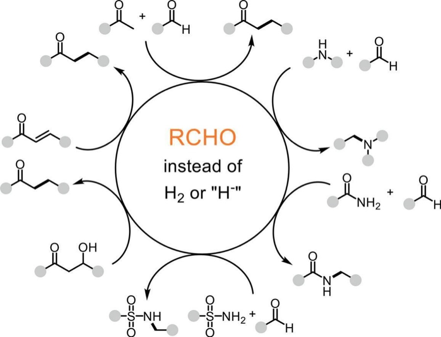
Our new publication was published in ChemSusChem about THF as an alkylating agent
Our laboratory team is delighted to announce a new publication in ChemSusChem (DOI: 10.1002/cssc.202402622). In this study, we developed a novel sustainable catalytic system for selective conversion of biomass-derived feedstocks, demonstrating significant improvements in efficiency and green metrics. Congratulations to all our co-authors from the lab - Alexandra Balalaeva, Dr. Evgeniya Podyacheva, Dr. Oleg Afanasyev and Prof. Dr. Denis Chusov and a special thanks to Higher School of Economics for the press release highlighting this breakthrough: https://www.hse.ru/news/science/1089403788.html.
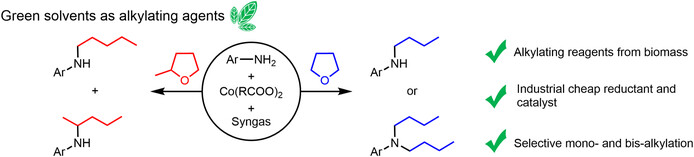
New publication in Beilstein J. Org. Chem.
Our group has published a new paper in Beilstein Journal of Organic Chemistry. The study explores reductive amination with hypophosphites, showing how the choice of counter-cation (Na⁺ vs. K⁺) impacts selectivity and efficiency. Green metrics (E-factor < 1) and DFT insights highlight the sustainability and mechanistic features of the process.
Congratulations to Natalia Lebedeva, Fedor Kliuev, Olesya Zvereva, Klim Biriukov, Evgeniya Podyacheva, Maria Godovikova, Oleg Afanasyev, and Denis Chusov on this achievement!
New article about sodium hypophosphite was published in Journal of Organic Chemistry
"Reductive Amination Reactions Using Sodium Hypophosphite: a Guide to Substrates" - our new comprehensive work about reductive amination using sodium hypophosphite was published in Journal of Organic Chemistry (IF = 3.458) on 28 July 2025. Congratulations to our authors - Dr. Artemy Fatkulin, Vasily Korochantsev, Dr. Evgeniya Podyacheva, Fedor Kliuev, Olesya Zvereva, Mikhail Losev, Ivan Smirnov, Dr. Oleg Afanasyev and Prof. Dr. Denis Chusov!
Our new comprehensive review about the halogen effect in ruthenium catalysis was published in Russian Chemical
The halogen effect in ruthenium catalysis - this article was successfully accepted in Russian Chemical Reviews (IF = 5.787) on 26 February 2025. Congratulations to our authors - Dr. Artemy Fatkulin, Dr. Oleg Afanasyev and Prof. Dr. Denis Chusov!
New article about synthesis of amides was published in Journal of Catalysis
"Direct synthesis of amides from nitroarenes and carboxylic acids via CO-mediated reduction" - our new work about amides production was accepted in Journal of Catalysis (IF = 6.615) on 22 February 2025. Congratulations to our authors - Mikhail Losev, Dr. Oleg Afanasyev and Prof. Dr. Denis Chusov!
Our new work about polymerization was published in European Polymer Journal
Krossing’s acid as efficient and versatile catalystfor ε-caprolactone polymerization - this article was successfully accepted in European Polymer Journal (IF = 6.0) on 10 February 2025. Congratulations to our authors - Dr. Andrey Kozlov, Dr. Oleg Afanasyev and Prof. Dr. Denis Chusov!
New article, which was published in European Journal of Organic Chemistry
Tandem, Catalyst‐Free C‐C Synthesis of Nitriles from Aldehydes and Methyl Cyanoacetate with Sodium Hypophosphite - this is our new article, which was published in European Journal of Organic Chemistry on 29 November 2024. Congratulations to our authors - Vasily Korochantsev, Alexander Boldyrev, Dr. Artemy Fatkulin, Dr. Evgeniya Podyacheva, Dr. Oleg Afanasyev and Prof. Dr. Denis Chusov!
Organic Chemistry Portal covered our recent work on simplifying the Eschweiler Clark reaction
Recently Organic Chemistry Portal has highlighted our work "Simplified Version of the Eschweiler-Clarke Reaction" published in JOC this year by Klim Biriukov, Evgeniya Podyacheva, Dr. Oleg Afanasyev. and Prof. Dr. Denis Chusov. We highly appreciate that Organic Chemistry Portal has taken an interest in our work.
You can read our article about simplified Eschweiler-Clarke reaction here.
New article, which was published in Mendeleev Communications
Mn-catalyzed syngas-assisted reductive Knoevenagel condensation - this is our new article, which was published in Mendeleev Communications on 1 November 2024. Congratulations to our authors - Ivan Smirnov, Klim Biriukov, Dr. Oleg Afanasyev and Prof. Dr. Denis Chusov!
Cyano-Fluorosulfonylation of Unactivated Alkenes by Photoredox and Copper Dual Catalysis - this article was published in Organic Letters on 16 October 2024. Congratulations to our authors - Dr. Oleg Afanasyev and Prof. Dr. Denis Chusov!
Our group has successfully participated in the RCOC conference and received award.
On September 27, 2024, the Russian Conference on Organic Chemistry (RCOC-2024) concluded. Our laboratory took part in the conference and presented 4 oral reports on different aspects of our activities.
Prof. Dr. Denis Chusov spoke about the need to be vigilant when searching for chemical information and to double-check the obtained data, in this regard, a very convenient service Odanchem, developed in our laboratory, can help.
Fedor Kluev told about our modern method, which allows to carry out the reductive amination reaction without using metal-based catalysts, thus allowing to use the obtained metal-free amines as medicines.
Dr. Oleg Afanasyev presented to the audience the concept of using synthesis gas as a reducing agent, showing the synergistic effect we discovered from mixing two independent reducing agents, CO and H2. This concept allows to carry out various reductive processes with high selectivity and activity on different metals, including recently thrilling 3d-metals.
Klim Birukov presented his work, which showed that it was possible to perform the Eschweiler-Clark reaction without one of the reagents, formic acid. Our methodology allows us to obtain amines with acidophobic groups, which makes this work especially interesting.
We congratulate Fedor on receiving the “Best Oral Presentation” award and wish all our participants further success in their projects
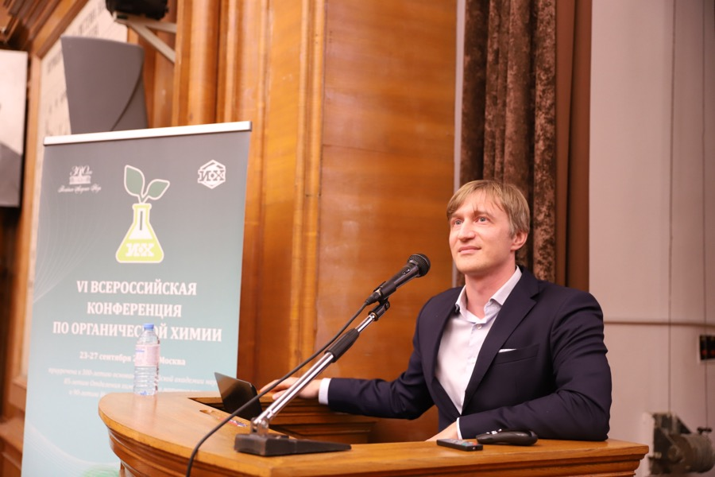
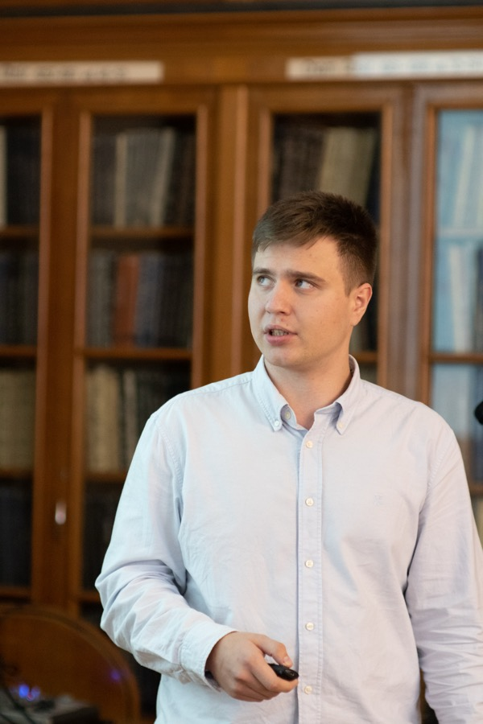
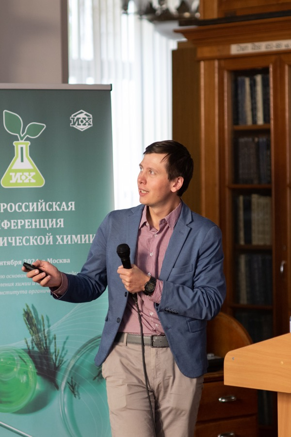
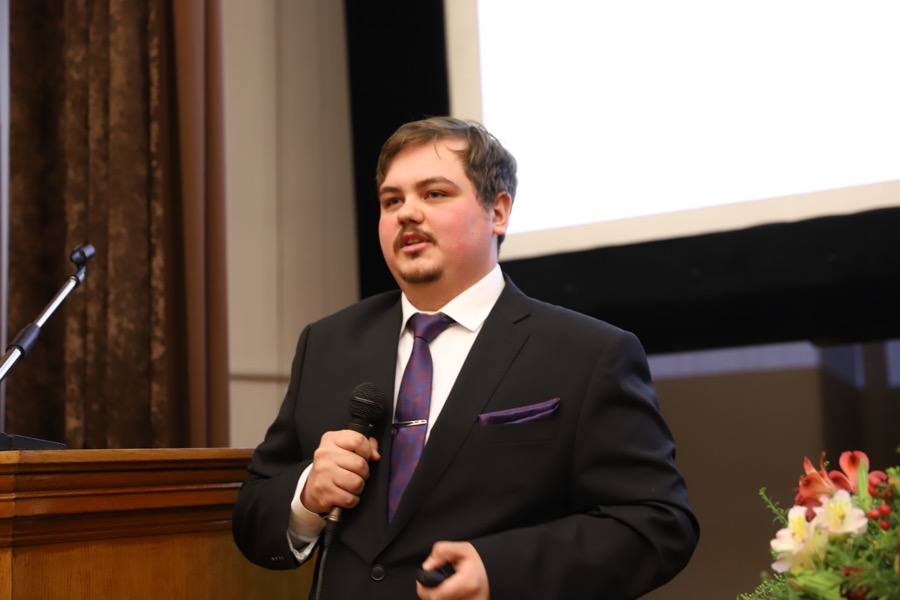
Vsevolod, Danil and Olesya - welcome to the lab!
Vsevolod and Olesya joined us as students of the Higher School of Economics: Vsevolod is a first-year bachelor's student and Olesya is a first-year master's student. Danil is currently a first-year student at the Higher Chemical College. We wish them good luck in their projects!
New article, which was published in Coordination Chemistry Reviews
Application of transition metal fluorides in catalysis - this is our new article, which was published in Coordination Chemistry Reviews on 9 August 2024. Congratulations to our authors - Andrey Kozlov, Dr. Alexey Tsygankov and Prof. Dr. Denis Chusov!
Our new article was published in The Journal of Organic Chemistry
Air-Stable Arene Manganese Complexes as Catalysts for the Syngas-Assisted Direct Reductive Amination, Cyanation of Aldehyde, and CO2 Fixation by Epoxide with High Functional Groups Tolerance - this article was published in The Journal of Organic Chemistry on 29 June 2024. Congratulations to authors - Ivan Smirnov, Klim Birukov, Dr. Oleg Afanasyev and Prof. Dr. Denis Chusov!
New article, which was published in Chemical Communications
Planar-chiral arene ruthenium complexes: synthesis, separation of enantiomers, and application for catalytic C–H activation - this is our new article, which was published in Chemical Communications on 26 March 2024. Congratulations to our authors - Dr. Evgeniya Podyacheva and Prof. Dr. Denis Chusov!
Our new article was published in The Journal of Organic Chemistry
Simplified Version of the Eschweiler–Clarke Reaction - this article was published in The Journal of Organic Chemistry on 16 February 2024. Congratulations to author - Klim Birukov, Dr. Evgeniya Podyacheva, Dr. Oleg Afanasyev and Prof. Dr. Denis Chusov!
Organic Chemistry Portal mentioned our recent work in the page related to the Tadpetch Synthesis
On 22 January Organic Chemistry Portal released a page which describes The Tadpetch Synthesis of Pestalotioprolide B. One of the stage in this synthesis was performed using methods described in our recent work Catalytic utilization of converter gas – an industrial waste for the synthesis of pharmaceuticals, published in Chemical Science journal. The full synthesis of Pestalotioprolide B described in Organic Chemistry Portal can be obtained here.
2023
New article, which was published in Organic Letters
Planar Chiral Rhodium Complex Based on the Tetrahydrofluorenyl Core for Enantioselective Catalysis - this is our new article, which was published in Organic Letters on 5 December 2023. Congratulations to our authors - Dr. Evgeniya Podyacheva and Prof. Dr. Denis Chusov!
Congratulations to Artemy Fatkulin and Vladimir Ostrovskii with defending their PhD theses!
We sincerely congradulate Artemy Fatkulin and Vladimir Ostrovskii with defending their PhD theses on 21 November 2023! Artemy`s work was about the development of effective approaches for reducing amination of carbonyl compounds. Vladimir presented his PhD thesis, which was about reductive addition of O- and N-nucleophiles to carbonyl compounds.
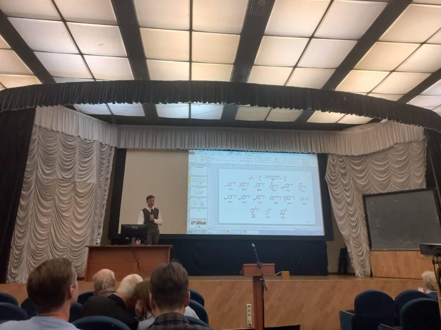
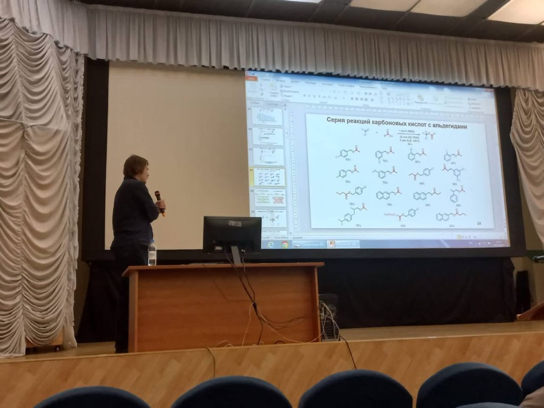
Our new article was published in Organic & Biomolecular Chemistry
Reductive coupling of nitroarenes with carboxylic acids – a direct route to amide synthesis - this article was published in Organic & Biomolecular Chemistry on 5 October 2023. Congratulations to authors: Mikhail Losev, Andrey Kozlov, Fedor Kliuev, Dr. Oleg Afanasyev and Prof. Dr. Denis Chusov!
Alex and Alexander joined us as students from Higher School of Economics. They are learning on the 1st course. We wish them good luck in their projects!
New article, which was published in Molecular Catalysis
Peculiarities of fluoride activation of porphyrin and phthalocyanine catalysts by the example of zirconium and hafnium in the production of cyclic carbonates - this is our new article, which was published in Molecular Catalysis on 29 August 2023. Congratulations to our authors - Klim Birukov, Dr. Oleg Afanasyev and Prof. Dr. Denis Chusov!
Our new article was published in Nature Communications
Streamlining the synthesis of amides using Nickel-based nanocatalysts - this article was published in Nature Communications on 17 August 2023. Congratulations to author - Prof. Dr. Denis Chusov!
A Pioneering Career in Catalysis: Henri B. Kagan - this is the new our article, which was published in ACS Catalysis on 16 August 2023. Congratulations to our author - Prof. Dr. Denis Chusov!
New article, which was published in New Journal of Chemistry
Syngas as a synergistic reducing agent for selective reductive amination—a mild route to bioactive amines - this is our new article, which was published in New Journal of Chemistry on 5 May 2023. Congratulations to our authors - Dr. Evgeniya Podyacheva, Alexandra Balalaeva, Dr. Sofiya Runikhina, Andrey Kozlov, Dr. Oleg Afanasyev and Prof. Dr. Denis Chusov!
Catalytic utilization of converter gas–an industrial waste for the synthesis of pharmaceuticals - this article was published in Chemical Science on 31 March 2023. Congratulations to authors: Ekaterina Kuchuk, Dr. Sofiya Runikhina, Dr. Oleg Afanasyev and Prof. Dr. Denis Chusov!
Congratulations to Alexey Tsygankov with defending his PhD thesis!
We congradulate Alexey Tsygankov with defending his PhD thesis on 28 March 2023! His work was about fluoride activation of catalysts which allows to significantly improve yield and ee of different reactions.
Natalya - welcome to the lab!
Natalya joined us as a student from Mendeleev University of Chemical Technology. She is learning on the 2nd course. We wish her good luck in projects!
Natalya`s biography is available by clicking on this link: Natalya Lebedeva.
New article was published in New Journal of Chemistry!
Sodium hypophosphite mediated reductive amination of carbonyl compounds with N, N-dialkylformamides - this is the new our article, which was published in New Journal of Chemistry on 10 March 2023. Congratulations to our authors - Artemy Fatkulin, Vasily Korochantsev, Evgeniya Podyacheva, Olga Chusova, Dr. Oleg Afanasyev and Prof. Dr. Denis Chusov!
New article, which was published in Mendeleev Communications
Nitrogen ligand influence on the CO-assisted ruthenium-catalyzed reductive amination - this is the new our article, which was published in Mendeleev Communications on 1 March 2023. Congratulations to our authors - Andrey Kozlov, Mikhail Losev, Dr. Oleg Afanasyev and Prof. Dr. Denis Chusov!
Alexey Tsygankov has changed his laboratory: now he works as a postdoc in Harutyunyan Research Group laboratory in Groningen, Netherlands. We wish him good luck in his scientific work in the new lab!
Our lab took part in The Sixth International Scientific Conference
During this week, 26-30 September, our team participated in The Sixth International Scientific Conference “Advances in Synthesis and Complexing”, which was held in RUDN University, Moscow. Prof Dr. Denis Chusov, Fedor Kluev and Andrey Kozlov have presented several topics, developed by our laboratory.
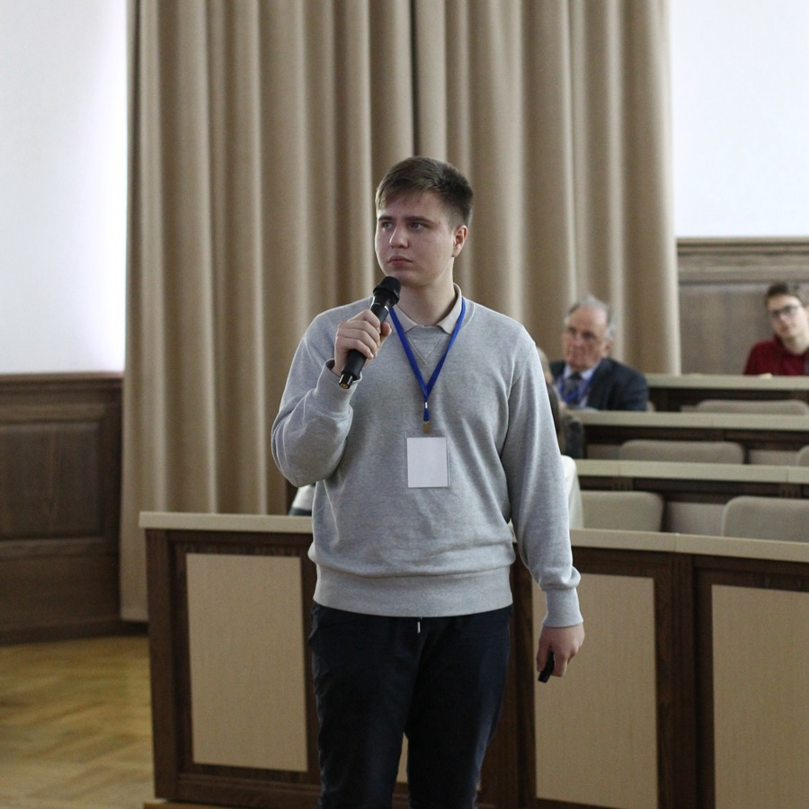
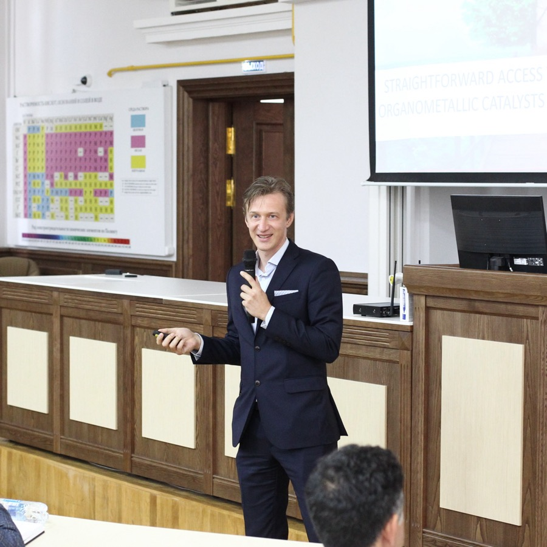
Vasilii, welcome to the lab!
Vasilii joined us as a student. He is learning on the 1st course of Chemistry Department of Higher School of Economics. We congradulate him and wish good luck in his projects!
Vasilii`s biography is available by clicking on this link: Vasilii Korochancev.
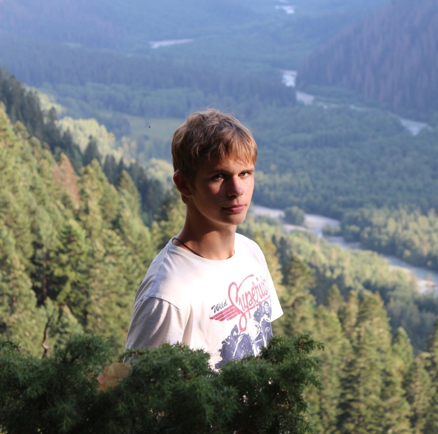
Our new article was published in The Journal of Organic Chemistry
Fluoride Additive as a Simple Tool to Qualitatively Improve Performance of Nickel-Catalyzed Asymmetric Michael Addition of Malonates to Nitroolefins - this article was published in The Journal of Organic Chemistry on 7 September 2022. Congratulations to authors: Fedor Kliuev, Alexey Tsygankov, Dr. Oleg Afanasyev and Prof. Dr. Denis Chusov!
Alexandra joined us as a Ph. D. student. She graduated from Chemistry Department of Moscow State University. She passed entering exams only with excellent marks. We congradulate her and wish good luck in her projects!
Alexandra`s biography is available by clicking on this link: Alexandra Balalaeva.
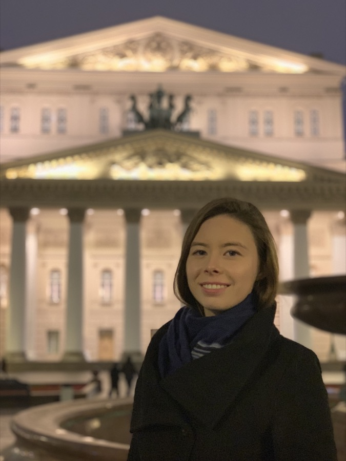
New article was published in Journal of Catalysis!
Borrowing hydrogen amination: whether a catalyst is required? - this is the new our article, which was published in Journal of Catalysis on 17 August 2022. Congratulations to our authors - Andrey Kozlov, Dr. Oleg Afanasyev and Prof. Dr. Denis Chusov!
Sofiya Runikhina has changed her laboratory: now she works as a postdoc in Harutyunyan Research Group laboratory in Groningen, Netherlands. We wish her good luck in her scientific work in the new lab!
Our new article in ACS Catalysis
Borrowing Hydrogen Amination Reactions: A Complex Analysis of Trends and Correlations of the Various Reaction Parameters - this is our new big article, which was published in ACS Catalysis on 1 June 2022. Congratulations to it`s authors: Dr. Evgeniya Podyacheva, Dr. Oleg Afanasyev and Prof. Dr. Denis Chusov!
New article, which was published in Chemical Communications
Asymmetric cyclopropanation of electron-rich alkenes by the racemic diene rhodium catalyst: the chiral poisoning approach - this is the new our article, which was published in Chemical Communications on 12 May 2022. Congratulations to our author - Prof. Dr. Denis Chusov!
On April 18-22 our lab participated in the North Caucasus Organic Chemistry Symposium, which was placed in Stavropol, Russia. Dr. Oleg Afanasyev received the best speaker award, congratulations!
Our new article in ACS Catalysis
Syngas Instead of Hydrogen Gas as a Reducing Agent─A Strategy To Improve the Selectivity and Efficiency of Organometallic Catalysts - this is a new article, which was published in ACS Catalysis on 15 April 2022. Congratulations to it`s authors: Vladimir Ostrovskii, Dr. Evgeniya Podyacheva, Dr. Oleg Afanasyev and Prof. Dr. Denis Chusov!
New article was published in Journal of Catalysis!
Enhancing the efficiency of the ruthenium catalysts in the reductive amination without an external hydrogen source - this is the new our article, which was published in Journal of Catalysis on 23 December 2021. Congratulations to our authors - Alexey Tsygankov, Artemy Fatkulin, Dr. Oleg Afanasyev and Prof. Dr. Denis Chusov!
Congratulations to the winners of the contest of scientific-research works!
On 11 December the winners of the contest of scientific-research works of students HSE ("NIRS") were announced. Two members of our laboratory - Fedor Kluev and Ivan Smirnov - were awarded the title of laureates! Fedor presented "Phosphine ligands in ruthenium-catalyzed reductive amination without an external hydrogen source" and Ivan - "Direct reductive amination of camphor". Our laboratory congradulate the authors!
Congratulations to Evgeniya Podyacheva with defending her PhD thesis!
We congradulate Evgeniya Podyacheva with defending her PhD thesis on 2 december 2021! Her work was about synthetic approaches to reduction addition reactions using various reducing agents.
Participation in IX Young Scientists Conference
Dr. Oleg Afanasyed won 3rd place for his oral talk at IX Young Scientists Conference! It was provided at N. D. Zelinsky Institute of Organic Chemistry (Russian Academy of Science). Oleg`s speech was about the use of Fe(CO)5 in organic synthesis. Congratulations!
Our new article was published in Chemistry–A European Journal
Frontispiece: Reductive Aldol‐type Reactions in the Synthesis of Pharmaceuticals - this article was published in Chemistry–A European Journal on 5 November 2021. Congratulations to authors: Dr. Sofiya Runikhina and Prof. Dr. Denis Chusov!
New article, which was published in Mendeleev Communications!
Hayashi ligand-based rhodium complex in carbon monoxide and molecular hydrogen-assisted reductive amination - this is the new our article, which was published in Mendeleev Communications on 1 November 2021. Congratulations to our authors - Dr. Sofiya Runikhina and Prof. Dr. Denis Chusov!
Straightforward Access to High-Performance Organometallic Catalysts by Fluoride Activation: Proof of Principle on Asymmetric Cyanation, Asymmetric Michael Addition, CO2 Addition to Epoxide, and Reductive Alkylation of Amines by Tetrahydrofuran - this is the new our article, which was published in ACS Catalysis on 13 October 2021. Congratulations to our authors - Alexey Tsygankov and Prof. Dr. Denis Chusov!
Denis Chusov was interviewed about The Nobel prize in chemistry
"Meduza" interviewed Denis Chusov about asymmetric reactions and catalysis, which was The Nobel Prize in chemistry about. You can read full interview here.
Our new article was published in European Journal of Organic Chemistry
Symmetrical Tertiary Amines: Applications and Synthetic Approaches - this article was published in European Journal of Organic Chemistry on 25 September 2020. Congratulations to authors: Dr. Oleg Afanasyev, Dr. Ekaterina Kuchuk, Karim Muratov and Prof. Dr. Denis Chusov!
Klim Biriukov became Ph. D. student on 25 September 2021 after his graduation from Higher Chemical College of the Russian Academy of Sciences (RAS).
Max, Mikhail and Ivan - welcome to the lab!
Max, Mikhail and Ivan joined us as a students from HSE. They are learning on the same 1st course of Chemistry Department! You can read more about every of them on these links: Max Shandybo, Mikhail Losev and Ivan Smirnov.
Our new article in Chemistry–A European Journal
Reductive Aldol-type Reactions in the Synthesis of Pharmaceuticals - this article was published in Chemistry–A European Journal on 17 August 2021. Congratulations to it`s authors: Dr. Sofiya Runikhina and Prof. Dr. Denis Chusov!
Mariya Makarova has changed her laboratory: now she works in Keith John Stevenson laboratory in Skoltech Center for Energy Science and Technology. We wish her good luck in her scientific work in the new lab!
Klim and Maria graduated in our lab!
Congratulations for Klim Biriukov and Mariya Makarova with their graduation!
Our new article was published in Journal of Organometallic Chemistry
Phosphine ligands in the ruthenium-catalyzed reductive amination without an external hydrogen source - this article was published in Journal of Organometallic Chemistry on 7 June 2021. Congratulations to it`s authors: Maria Makarova, Dr. Oleg Afanasyev, Fedor Kluev and Prof. Dr. Denis Chusov!
New article was published in Angewandte Chemie International Edition
Synthesis of Rhodium Complexes with Chiral Diene Ligands via Diastereoselective Coordination and Their Application in the Asymmetric Insertion of Diazo Compounds into E−H Bonds - this article was published in Angewandte Chemie International Edition on 31 May 2021. Congratulations to our author - Prof. Dr. Denis Chusov!
New article was published in Catalysis Science & Technology
Carbon monoxide-driven osmium catalyzed reductive amination harvesting WGSR power - this is the new article, that was published in Catalysis Science & Technology on 25 May 2021. Congratulations to our authors: Klim Birukov, Dr. Oleg Afanasyev, Alexey Tsygankov and Prof. Dr. Denis Chusov!
Our Ph. D. students took part in "Vesnyanka" conference, which was provided by A.N. Nesmeyanov Institute of Organoelement Compounds of the Russian Academy of Sciences (RAS) on 30 March - 2 April 2021. Alexey Tsygankov presented the project about reactions of C-N bond formation using CO as reducing agent, Evgeniya Podyacheva presented the project about reductive addition of amines to carbonyl compounds using iron pentacarbonyl and CO and Vladimir Ostrovskii presented the project about Rh-catalyzed reductive addition of carboxylic acids to carbonyl compounds.
Congratulations for the new article, which was published in Chemistry–A European Journal
Easy Access to Versatile Catalytic Systems for C−H Activation and Reductive Amination Based on Tetrahydrofluorenyl Rhodium(III) Complexes - new article in Chemistry–A European Journal, which was published on 29 March 2021. Congratulations for our authors: Dr. Sofiya Runikhina and Prof. Dr. Denis Chusov!
Our student took 3rd place in the contest of scientific-research works of students HSE!
Fedor Kluev took 3rd place in the contest of scientific-research works of students Higher School of Economics. This is the first time in the history of the university when 1st year student won in the competition!
Thus, HSE interviewed Fedor Kluev and Denis Chusov about science work. You can read interview here.
2017
Evgeniya, welcome to the lab
Evgeniya joined our lab as a PhD student. She graduated from MSU. She passed entering exams only with excellent marks.
Congrats to Maria with Grand Award Intel ISEF 2017; First Physical Science Award from Sigma, Xi, the
Los Angeles, CA – Society for Science & the Public, in partnership with the Intel Foundation, announced Grand Awards of the Intel ISEF 2017. Student winners are ninth through twelfth graders who earned the right to compete at the Intel ISEF 2017 by winning a top prize at a local, regional, state or national science fair.
Поздравляем Марию с чередой побед в США. Подробнее об этом можно прочитать тут: